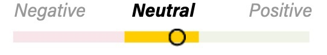
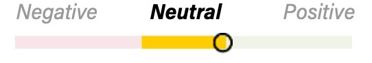
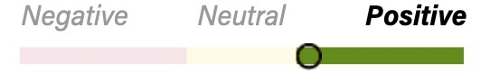
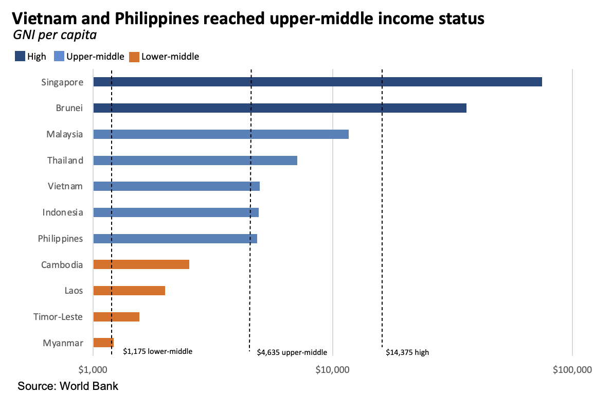
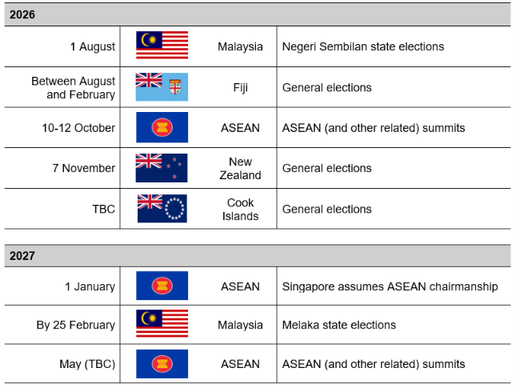

| |
-
Malaysia: Anwar likely to ramp up populist policies
-
Malaysia: New rare earth plant will strengthen processing role
-
Indonesia: Policy implementation remains a watchpoint despite resilient credit outlook
-
Indonesia: Corruption probe fuels institutional rivalry
-
Vietnam: Renewed focus on nuclear and wind energy
-
Myanmar: Growing diplomatic normalization following elections
-
Charting ASEAN: Vietnam and Philippines reach upper-middle income status
- Event calendar
Malaysia
By Fadli Yusoff
Short-term trajectory:
 |
Long-term trajectory:
 |
State election losses likely to push Anwar to boost populist spending. Prime Minister Anwar Ibrahim’s Pakatan Harapan (PH) coalition won only eight seats (out of 56)—down from 12 previously—in the Johor state assembly elections on 11 July. Barisan Nasional (BN), PH’s partner in the federal government, swept the other 48 seats, up from 40 before, retaining firm control of the state administration.
- PH’s loss was expected given infighting and weak local organization. Nevertheless, the poor performance—including in heavily ethnic Chinese areas that have traditionally backed PH—will probably push Anwar to increase populist spending and introduce measures that benefit the Chinese community. Likely steps include assistance for small businesses, such as soft loans and looser tax invoicing rules, as well as more funding for Chinese-language schools. Although greater support for Chinese community interests could weaken some ethnic Malay backing, Anwar must shore up his base. He will also likely revive promised governance reforms to re-energize PH’s progressive supporters, including a term limit for prime ministers.
- The result does not change the outlook that BN will continue to back Anwar at the federal level until the next general elections, largely because it lacks an easy path to an alternative majority. The contest will most likely take place in late 2027 because Anwar wants time to rebuild support and convince BN that both sides would benefit from contesting the federal election under a pact (see Anwar’s expected state poll setbacks will slow fiscal consolidation, 16 June 2026). This week, the prime minister dismissed calls for early polls.
- For BN, the landslide victory increases the likelihood that it will win the upcoming state elections in Negeri Sembilan (1 August) and Melaka (expected later this year) and that it will contest both races separately from PH. Opposition Parti Islam Se-Malaysia will pursue cooperation with BN even more actively in state and general elections to avoid splitting the Malay-Muslim vote.
New plant expands Malaysia’s role in the global rare earth supply chain. French firm Carester announced on 6 July that it plans to build a rare earth separation plant in Perak state under a ten-year joint venture with Malaysian mining company Malaco.
- Malaysia is the second-largest rare earth processing hub after China. Carester has not disclosed the planned investment amount, but the project is further evidence of Malaysia’s growing appeal to Western companies seeking to diversify critical mineral supply chains away from China.
- Carester intends to divide production between the Malaysian plant and its facility in southwestern France. Paris said the two facilities could eventually meet 15%–20% of global heavy rare earth demand. Although the target appears ambitious, the project could make Malaysia an important hub for emerging European rare earth supply chains, particularly for the automotive, renewable energy, and defense sectors.
- The partnership could also help Malaysia move beyond processing imported feedstock and build a more integrated domestic rare earth industry. Malaco is expected to oversee permitting and identify sites for upstream operations in Perak and Kelantan, potentially linking domestic mining with downstream separation and refining. However, the companies will probably face challenges in securing approvals and community support.
Indonesia
By Olga Letticia
Short-term trajectory:
 |
Long-term trajectory:
 |
Rating affirmation reassures markets even as policy uncertainty remains a risk. On 13 July, S&P Global Ratings affirmed Indonesia’s BBB sovereign credit rating with a stable outlook. The agency said it expects the recent weakening in Indonesia’s fiscal and external position to prove temporary. It attributed the decline to high global energy prices, elevated interest rates, a weak currency, and accumulated debt. S&P also stressed that stronger policy implementation and fiscal discipline will be critical to maintaining the rating. As of 15 July, the Jakarta Composite Index has risen around 2% since S&P’s announcement.
- S&P said Indonesia's fiscal position should improve as commodity prices recover, spending is restrained, and revenue rises. The agency also forecast that the government will keep the fiscal deficit below the statutory 3%-of-GDP ceiling. S&P noted that planned spending cuts to the free meals program will support fiscal discipline, in line with Eurasia Group’s view (see Prabowo likely to cut spending on flagship free meals program, 2 July 2026). The agency projects 5.1% GDP growth in 2026 and expects net government debt to remain relatively low compared with that of similarly rated sovereigns. Finance Minister Purbaya Yudhi Sadewa welcomed the decision, saying it validates the government's fiscal strategy and commitment to maintaining macroeconomic stability.
- S&P expressed cautious optimism about government efforts to strengthen governance in the natural resources sector through Danantara Sumberdaya Indonesia. The agency said centralized management, tighter export oversight, and measures to curb under-invoicing and transfer pricing could boost fiscal revenue and export earnings over the medium term. However, it warned that continued changes to mining quotas, royalty rates, export rules, and other resource-sector policies could erode investor confidence if implementation remains unpredictable.
- The rating affirmation gives President Prabowo Subianto's administration an important endorsement of its fiscal management, but it does not address the broader structural issues driving market concerns. In particular, foreign portfolio investors have become increasingly concerned about governance, market accessibility, and policy predictability—challenges Morgan Stanley Capital International (MSCI) highlighted in its recent market classification review, with the outcome expected in November.
Law enforcement rivalry raises governance concerns. Indonesia’s widening corruption investigation has escalated into an unusually public dispute between the National Police, the Attorney General's Office (AGO), and the military, heightening concerns about institutional cohesion and the rule of law.
- The National Police expanded an investigation into alleged corruption tied to coal supplies for the state electricity company. The case centers on manipulation of coal quality and shipment volumes, which contributed to recent nationwide blackouts and caused about 5 trillion rupiah ($278 million) in state losses. Earlier this month, police raided 13 locations, including a property—guarded by the military—owned by Assistant Attorney General for Special Crimes Febrie Adriansyah, seizing 520 billion rupiah ($28.9 million) in cash and gold. The investigation later broadened to include alleged corruption and money laundering involving state-owned enterprises Asabri, Jiwasraya, and Krakatau Steel.
- Febrie, an appointee from former president Joko Widodo’s administration, headed several high-profile corruption investigations since 2022, including the case that led to the recent conviction of Gojek co-founder Nadiem Makarim. Febrie denied wrongdoing before resigning on 11 July. Police later named him a suspect before transferring the investigation to the AGO. The move prompted criticism over potential conflicts of interest, and a possible behind-the-scenes deal between the police and AGO to deescalate tensions. There have been renewed calls for the Corruption Eradication Commission (KPK) to take over the case.
- The coal scandal has inflamed longstanding animosity among the police, AGO, and military. The AGO had already stoked tensions by charging a senior police general over alleged corruption in Prabowo's free meals program, prompting speculation about institutional retaliation. While the dispute is unlikely to affect political stability, the public rivalry has deepened concerns over legal certainty, governance, and the independence of law enforcement. It has also fueled rumors that Attorney General ST Burhanuddin could be replaced. The investigation will remain in the spotlight in the coming weeks, with scrutiny focused on whether the AGO pursues the case against its former senior official and whether the KPK steps in to address growing concerns over conflicts of interest.
Vietnam
By Melinda Hoe
Short-term trajectory:
 |
|
Hanoi moving to accelerate nuclear and wind energy development after setbacks. Earlier this month, the Ministry of Industry and Trade said that it will choose a new foreign partner in the third quarter to develop the Ninh Thuan 2 nuclear power plant with state energy firm Petrovietnam. Japan withdrew from the project late last year. Separately, Vietnam enacted Decree 272 on 4 July, creating a framework to attract FDI in offshore wind.
- Hanoi reaffirmed its target for Ninh Thuan 2, which has a planned capacity of up to 3.2 GW, to begin commercial operations between 2030 and 2035. The government now publicly requires the foreign partner to meet a localization rate of 30% to 60%, in line with its broader goal of supporting domestic industries. Vietnam will likely apply similar terms to other major infrastructure projects going forward.
- Vietnam also confirmed that it has held talks with Korea Electric Power, a publicly listed, majority state-owned utility. In a meeting with Deputy Minister of Industry and Trade Nguyen Hoang Long, South Korea’s Vice Minister for International Trade and Investment Kang Kam-chan said Seoul was prepared to provide sovereign loans covering up to 85% of the project’s cost, previously estimated at $11 billion. That support would likely prove critical for Hanoi, which faces an infrastructure funding gap of $100 billion to $200 billion over the next decade, according to various estimates.
- Decree 272, also known as the Offshore Wind Investment Framework, is widely seen as a positive step that could renew interest among foreign investors deterred by the lack of clear rules and regulations. Key provisions in the new framework include simplified procedures and clearer, faster processing timelines, meaning a project could theoretically secure approval within one month. The changes will help meet the new targets in the revised Power Development Plan VIII, published in April 2025, after slow progress forced the government to push back ambitious goals.
Myanmar
By Melinda HoeTop officials’ overseas visits point to start of regional diplomatic normalization. In the past two weeks, President Min Aung Hlaing made a three-day trip to Laos while Foreign Minister Tin Maung Swe met his ASEAN counterparts in Bangkok. Hlaing has also visited China and India since assuming the presidency in April.
- Hlaing’s trip to Laos was presented as a commemoration of the 70th anniversary of bilateral diplomatic relations. However, the president is likely trying to restore his government’s full standing in ASEAN and wants to secure Vientiane’s support. Since the 2021 coup in Myanmar, ASEAN has barred the country’s military leadership from high-level meetings. China likely encouraged Laos to host the visit, given Beijing’s longstanding interest in stabilizing Myanmar.
- Swe’s informal meeting with other ASEAN foreign ministers suggests that at least some governments in the bloc tacitly accept Myanmar’s election, even though critics widely described the contest as neither free nor fair. ASEAN continues to reaffirm the central importance of the Five-Point Consensus—a regional peace plan adopted after the coup—but the bloc has set no deadline for enforcement.
- Hlaing likely believes time is on his side and will continue to pursue bilateral visits and participation in ASEAN meetings. Reports indicate that Hlaing will visit Thailand in early August, although Bangkok has not confirmed the trip. That strategy could gradually pave the way for full diplomatic normalization.
Charting ASEAN

Vietnam and the Philippines have reached upper-middle-income status, underscoring Southeast Asia’s improving economic development. In the latest World Bank classification, based on GNI per capita, the two countries join Indonesia, Thailand, and Malaysia in that category. The achievement reflects rising household incomes and purchasing power across the region, although significant gaps remain across ASEAN’s 11 members. Future gains will depend largely on government efforts to boost productivity, attract investment, and move up global value chains.
Event calendar

|
|